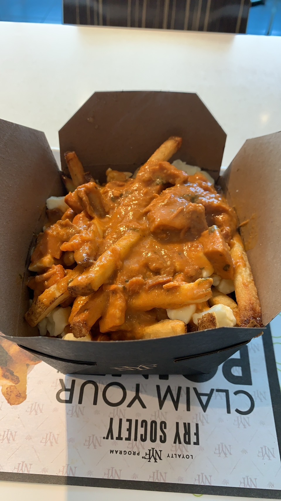

Butter Chicken Poutine

Potatoe cravings? Indian food but don't want to visit India? Just make this butter chicken poutine at home! With these few ingredients, you'll have a michelin star level dish ready in to time!
Ingredients
- Frozen cut fries
- Instant butter chicken mix
- Chicken cut into cubes
- Cheese curds
Cooking Instructions
- Deep-fry the frozen fries in a fryer.
- Mix the instant butter chicken mix in a pan with the chicken cubes.
- Place the fries in a cup and drizzle it with the butter chicken sauce.
- Garnish the dish with cheese curds.
click to return